import sys
from pathlib import Path
import importlib
nb_folder = Path().resolve()
PROBLEM_NAME = nb_folder.name
parent_folder = nb_folder.parent
if str(parent_folder) not in sys.path:
sys.path.insert(0, str(parent_folder))Nonlinear Heat Conduction Problem with hyper-reduction, reduction and full order simulation

Environment Setup
Directories
Standard Imports
#Standard Imports and class import
#Standard Imports and class import
from skrom.utils.imports import *
from skrom.rom.rom_utils import *
from skrom.utils.reduced_basis.svd import svd_mode_selector
from skrom.rom.rom_error_est import *
from skrom.fom.fem_utils import load_domain
from skrom.utils.visualization.plot_utils import *
import skrom.problem_classes.static.master_class as master
problem_mod = importlib.import_module(f"{PROBLEM_NAME}.problem_def") #- this runs @register_problem
# SKROM ROM (Reduced Order Modeling) core classes
from skrom.rom.linear_form_rom import LinearFormROM
from skrom.rom.ecsw.hyperreduce import hyperreduce
from problem_def import ProblemNonLinear
# Problem-specific linear forms
from linear_forms import RPlot Properties
Full Order Simulation
# Control flag for expensive simulation generation
generate = False
# Conditional execution block for simulation data generation
if generate:
# Create an instance of the non-linear heat conduction simulation
sim = master.fom_simulation(num_snapshots = 32)
sim.run_simulation()Load Simulation Data
#Load the ROM_data
current_dir = Path().resolve()
rom_dir = current_dir / "ROM_data"
fos_solutions, sim_data = load_rom_data(self=None, rom_data_dir=rom_dir)[load_rom_data] loaded from /Users/syedabidi/Documents/GitHub/scikit-rom/examples/computational_mechanics/static/non_linear/problem_1_h/ROM_dataData Generation
Generate Training Solution Dataset
# Convert parameter list to a NumPy array (representing system parameters)
# This contains the parameter values for each simulation run (e.g., thermal conductivity,
# boundary conditions, material properties, etc.)
param_list = np.asarray(sim_data['param_list'])
# Load non-linear solutions from the full-order system
# NLS contains the high-fidelity finite element solutions for each parameter set
# Each row represents a complete solution snapshot (discretized spatial field)
NLS = np.asarray(fos_solutions)
# Split data into training and testing using predefined masks
# These boolean masks determine which snapshots are used for ROM training vs validation
train_mask, test_mask = sim_data['train_mask'], sim_data['test_mask']
# Apply masks to filter non-linear solutions for training and testing
# Training set: Used to construct the ROM basis functions and train the model
NLS_train = NLS[train_mask] # Training snapshots with Dirichlet boundary conditions applied
# Testing set: Used to evaluate ROM accuracy and performance on unseen data
NLS_test = NLS[test_mask] # Testing snapshots with Dirichlet boundary conditions applied
# Get the number of snapshots (parameter samples or time instances)
# N_snap: Total number of simulation snapshots available
# Second dimension: Number of degrees of freedom (DOFs) in the spatial discretization
N_snap, _ = np.shape(NLS)
# Display the total number of snapshots for verification
print(N_snap) # Print the number of snapshots available64Mean Subtraction
# Compute the mean temperature field across all training snapshots
# This represents the "average" or "reference" temperature distribution
# Shape: [N_dof] - one mean value for each spatial degree of freedom
NLS_train_mean = np.mean(NLS_train, axis=0)
# Mean-center the training data by subtracting the mean field
# This creates fluctuations/deviations from the mean temperature distribution
# Shape: [N_train_snapshots, N_dof] - same as original but now mean-centered
# Each row now represents how much each snapshot deviates from the average
NLS_train_ms = NLS_train - NLS_train_mean
#We will use SVD on the mean subtracted matrix dataDistribution of the training parameters
# Visualize the parameter space distribution for training and testing data
# Plot training parameter combinations (first 16 samples)
# Extract first and second parameter columns for 2D visualization
plt.scatter(param_list[:16][:, 0], # First parameter (μ) for training samples which are the k_params
param_list[:16][:, 1], # Second parameter (β) for training samples which are the q_params
s=50, # Marker size
c='#163e64', # Dark blue color for training points
label="Training") # Legend label
# Plot testing parameter combinations (samples 17 and beyond)
plt.scatter(param_list[16:][:, 0], # First parameter (μ) for testing samples
param_list[16:][:, 1], # Second parameter (β) for testing samples
s=50, # Marker size (same as training)
c='#e97132', # Orange color for testing points
label="Testing") # Legend label
# Set axis labels using LaTeX formatting for mathematical notation
plt.xlabel("$\\mu$") # First parameter (often material property, conductivity, etc.) this is the k_params
plt.ylabel("$\\beta$") # Second parameter (often boundary condition, heat source, etc.) this is the q_params
# Add legend to distinguish between training and testing sets
plt.legend()
#See params and properties to see how these are used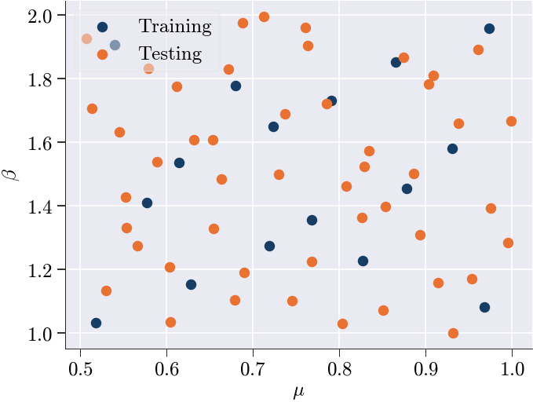
Performing SVD on training snapshots
# Configure plot styling for POD analysis visualization
plt.rcParams['lines.markersize'] = 6 # Set marker size for data points
plt.rcParams['lines.linewidth'] = 2.0 # Set line thickness for better visibility
# Perform Singular Value Decomposition (SVD) for POD mode selection
# SVD decomposes the mean-centered training data to find optimal basis functions
n_sel, U = svd_mode_selector(NLS_train_ms, # Input: mean-centered training snapshots
tolerance=1e-7, # Convergence criterion for mode selection
modes=True) # Return both number of modes and basis vectors
n_sel = 6
# Extract the selected POD basis vectors (spatial modes)
# V_sel contains the first n_sel most energetic POD modes
# Shape: [N_dof, n_sel] - each column is a spatial basis function
V_sel = U[:, :n_sel] # This will be passed to the ROM simulation function
# Set axis labels for the POD energy plot (generated by svd_mode_selector)
plt.ylabel('$1-r_{k}$') # Energy not captured by first k modes
plt.xlabel('POD modes ($k$)') # Number of POD modes retainedNumber of modes selected: 8Text(0.5, 0, 'POD modes ($k$)')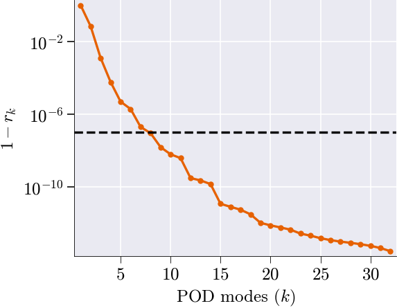
ROM Simulation
# Initialize the reduced-order model (ROM) simulation
# V_sel : precomputed basis matrix (e.g., selected POD modes)
# n_sel : number of basis vectors (modes) to retain in the ROM
rom = master.rom_simulation(V_sel=V_sel, n_sel = n_sel)[load_rom_data] loaded from /Users/syedabidi/Documents/GitHub/scikit-rom/examples/computational_mechanics/static/non_linear/problem_1_h/ROM_data# Run the reduced-order model (ROM) simulation.
# rom object will contain the NLS rom simulation solutions and other simulation aspects required by ROM such as the param_list etc.
generate = True
if generate:
rom.run_rom_simulation();
#Returns the Newton iteration errors just like full order simulationSnap 1/64 params=[0.60441857 1.03585147]
1 0.003449750995855179
2 3.337767345082339e-06
Snap 2/64 params=[0.90849612 1.81201197]
1 0.0032229832261260727
2 3.697805342916625e-06
Snap 3/64 params=[0.80825427 1.463416 ]
1 0.0020641235153265863
2 1.4208524331785759e-06
Snap 4/64 params=[0.73733329 1.68920741]
1 0.005095770979118509
2 9.372613996018295e-06
Snap 5/64 params=[0.6549118 1.33006367]
1 0.0026329626141223797
2 2.2692438616450473e-06
Snap 6/64 params=[0.83398938 1.57303659]
1 0.001586757908689478
2 8.427675690285241e-07
Snap 7/64 params=[0.95304304 1.17164498]
1 0.008698005260654744
2 2.3243487626103e-05
Snap 8/64 params=[0.50712202 1.92671818]
1 0.024646411953344945
2 0.00026923005093367256
Snap 9/64 params=[0.55290247 1.42934462]
1 0.008965846696593104
2 2.263953505327735e-05
Snap 10/64 params=[0.99858256 1.66851882]
1 0.009442341910414842
2 2.69947816868687e-05
Snap 11/64 params=[0.85098126 1.07187502]
1 0.005692028734740976
2 1.0303519312168452e-05
Snap 12/64 params=[0.67166085 1.83074839]
1 0.016395778867910688
2 0.00011150237868571232
Snap 13/64 params=[0.68982531 1.19035375]
1 0.009967926007231141
2 2.976307826850136e-05
Snap 14/64 params=[0.76050538 1.96274651]
1 0.008777542394407641
2 2.8883465315520904e-05
Snap 15/64 params=[0.89371539 1.30940082]
1 0.01207317358095707
2 4.2937412892811384e-05
Snap 16/64 params=[0.58939501 1.53896234]
1 0.012414845274631055
2 6.079198661767626e-05
Snap 17/64 params=[0.56631351 1.27532639]
1 0.0033018948135199516
2 3.4783649267272384e-06
Snap 18/64 params=[0.88601609 1.50278101]
1 0.006071157535950606
2 1.1686085202687685e-05
Snap 19/64 params=[0.76823427 1.22638201]
1 0.0012564153372850643
2 5.336523554707495e-07
Snap 20/64 params=[0.71293825 1.99697305]
1 0.012263274901048418
2 5.8619440543845174e-05
Snap 21/64 params=[0.67936017 1.1060987 ]
1 0.011783196539878296
2 4.074749639133279e-05
Snap 22/64 params=[0.87406273 1.86677188]
1 0.00577725660959451
2 1.2241152386265013e-05
Snap 23/64 params=[0.9754696 1.39316806]
1 0.008417115210905074
2 2.1917023740322886e-05
Snap 24/64 params=[0.54517361 1.63444726]
1 0.016098199416193917
2 0.00010573274153896093
Snap 25/64 params=[0.5304225 1.13573854]
1 0.007558548034909145
2 1.7204766233398372e-05
Snap 26/64 params=[0.96047757 1.89236886]
1 0.001802147148553979
2 1.0796110501647247e-06
Snap 27/64 params=[0.82658629 1.36401578]
1 0.0037405945469276805
2 4.583098751079144e-06
Snap 28/64 params=[0.63164091 1.60933928]
1 0.009419998785022258
2 3.3639504470215785e-05
Snap 29/64 params=[0.72989872 1.49971392]
1 0.004748699688815923
2 7.141174264649189e-06
Snap 30/64 params=[0.78495382 1.72315666]
1 0.0014432350204167438
2 7.168030691573369e-07
Snap 31/64 params=[0.93176703 1.00150501]
1 0.014474387207946223
2 5.9856201984869935e-05
Snap 32/64 params=[0.61182162 1.7761103 ]
1 0.020864377653533984
2 0.0001905250499813471#Assign values for the statistics
NLS_rom = np.asarray(rom.rom_solutions)
ROM_speed_up = rom.speed_up
ROM_speed_up=ROM_speed_up
ROM_relative_error = rom.rom_errorROM solution vs. Full order solution performance statistics
# --- Standard ROM error analysis ---
# Compute a flat matrix of error metrics comparing true nonlinear solutions to ROM approximations
matrix = compute_rom_error_metrics_flat(NLS_test, NLS_rom)
# Produce a text-based report summarizing these error metrics
generate_rom_error_report(matrix)
# Plot diagnostic figures: error vs. speed-up for the standard ROM
plot_rom_error_diagnostics_flat(
NLS_test, # full-order (true) solution snapshots
NLS_rom, # ROM-generated solution snapshots
ROM_relative_error, # precomputed relative error of the ROM
ROM_speed_up, # precomputed speed-up factor of the ROM
sim_axis=['True', 'ROM'],
metrics=matrix # the matrix of error metrics just computed
)===================
ROM Accuracy Report
===================
Global Errors:
L2 Error: 1.0067e-07
Relative L2 Error: 1.4259e-09
L∞ Error: 2.2735e-09
Relative L∞ Error: 4.2661e-09
RMSE: 1.8793e-10
MAE: 6.4495e-11
Statistical Fit:
R² Score: 1.0000
Explained Variance: 1.0000
Error Distribution:
Median Error: 1.0157e-12
95th Percentile Error: 1.6946e-10
Time/Parameter-Dependent Errors:
Average Rel L2 Error over time/parameter: 6.9030e-10
Max Rel L2 Error over time/parameter: 7.2410e-09
Min Rel L2 Error over time/parameter: 1.0193e-10
――――――――――――――――――――――――――――――――――――――――――――――――――――――――――――――――――――――――――――――――――――――――――――――――――――――――――――――――――――――――――――――――――――――――――――――――――――――――――――――――――――――――――――――――――――――――――――――――――――――――――――――――――――――――――――――――――――――――――――――――――――――――――――――――――――――――――――――――――――――――――――――――――――――――――――――――――――――――――――――――――――――――――――――――――――――――――――――――――――――――――――――――――――――――――――――――――――――――――――――――――――――――――――――――――――――――――――――――――――――――――――――――――――――――――――――――――――――――――――――――――――――――――――――――――――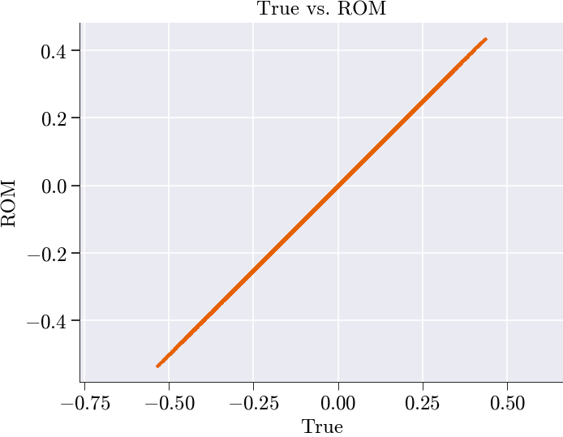
spatial_shape not given → skipping spatial snapshots.
--------------------------------------------------------------------------------------------------------------------------------------------------------------------------------------------------------------------------------------------------------------------------------------------------------------------------------------------------------------------------------------------------------------------------------------------------------------------------------------------------------------------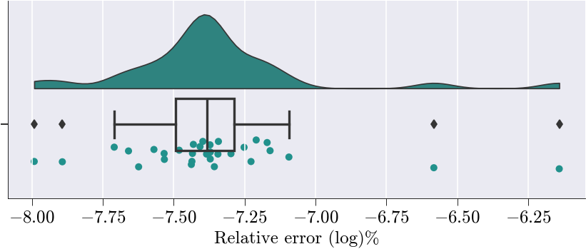
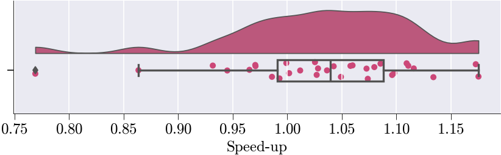
Hyper ROM Simulation
Mesh Sampling
prob = ProblemNonLinear()
sim_data['dirichlet_dofs'] = prob.domain()['dirichlet_dofs']
free_dofs = sim_data['basis'].item().complement_dofs(sim_data['dirichlet_dofs'])
prob.mesh = sim_data['mesh'].item()
# Get the finite element basis object for ROM construction
# This contains the spatial discretization information and basis functions
basis = sim_data['basis'].item()# Create the ROM residual linear form object
# This represents the linear form R(u,v) in the weak formulation of the PDE
Residual = LinearFormROM(R, # Linear form function from problem definition
basis, # Finite element basis functions
V_sel, # Selected POD modes (reduced basis)
free_dofs=free_dofs) # Free DOFs (excluding Dirichlet boundaries)
# Extract parameter values corresponding to training snapshots
# Uses the boolean mask to get only the parameter combinations used for training
training_params = param_list[train_mask]# Collect residual evaluations for all training snapshots
# This creates the dataset needed for hyperreduction of nonlinear ROM terms
q_mus = collect_residuals(
NLS_train_ms, # Mean-centered training snapshots
NLS_train_mean, # Mean temperature field
V_sel, # Selected POD basis modes
reconstruct_solution, # Solution reconstruction function
Residual, # ROM residual operator
training_params,
prob.assemble_kwargs,
)
# Display the shape of collected residuals for verification
# Shape should be: (n_training_snapshots * SVD components, n_residual_evaluation_points)
print(q_mus.shape)
#Output should be 16(for training snapshots) * 5(SVD components selected) = 80(192, 2160)Performing the SVD on snapshots
print("Performing SVD...")
# Performs Singular Value Decomposition on q_mus matrix
# Returns U (left singular vectors), s (singular values), Vh (right singular vectors transposed)
Uh, s, Vh = np.linalg.svd(q_mus, full_matrices=False)
# Plots singular values on a logarithmic y-scale to visualize their decay
# This helps identify the effective rank/dimensionality of the matrix
plt.semilogy(s, 'o-')
# Takes the first 20 right singular vectors (rows of Vh)
# This creates a reduced basis capturing the most significant modes
V_q_eff = Vh[:100]
# Computes a weighted combination of the basis vectors
# Each basis vector is weighted equally (multiplied by 1)
# This essentially sums all 20 basis vectors
d_q = V_q_eff @ np.ones(V_q_eff.shape[1])
# Outputs the L2 norm of the resulting vector
# This gives a sense of the magnitude of the combined basis representation
print("magnitude of d_q:", np.linalg.norm(d_q))Performing SVD...
magnitude of d_q: 40.31833794775401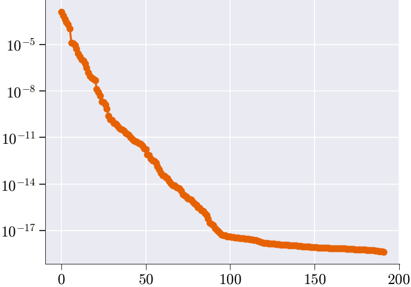
NNLS matrix
# Solve the non-negative least squares (NNLS) problem using hyperreduce
# V_q_eff : effective basis matrix
# verbosity : level of log output (2 = detailed)
# const_tol : tolerance for column selection
# zero_tol : tolerance to treat values as zero
# plot : disable plotting
x_nnls_m, err = hyperreduce(
V_q_eff,
verbosity=2,
const_tol=1e-8,
zero_tol=1e-8,
plot=False
)
# Compute and print the relative NNLS reconstruction error:
# ‖q_mus·(x_nnls_m – 1)‖ / ‖q_mus·1‖
rel_error = np.linalg.norm(q_mus @ (x_nnls_m - np.ones_like(x_nnls_m)))
rel_error /= np.linalg.norm(q_mus @ np.ones_like(x_nnls_m))
print("NNLS error:", rel_error)NNLSSolver init (Sequential Version)
Starting NNLS solve...
0 0 100 2160 0 1.116468487250198e+01 4.031833794775401e+01
1 1 100 2160 1 1.113200229323044e+01 4.018680840119323e+01
2 2 100 2160 2 1.114526698854469e+01 4.005055093792596e+01
3 3 100 2160 3 1.107082076912621e+01 3.945722604397216e+01
4 4 100 2160 4 1.182165289296159e+01 3.914887160661148e+01
5 5 100 2160 5 1.172908544605321e+01 3.862472613325785e+01
6 6 100 2160 6 1.185073373379892e+01 3.844248756055155e+01
7 7 100 2160 7 1.164791334486404e+01 3.824535784926690e+01
8 8 100 2160 8 1.141774231093492e+01 3.805470251422634e+01
9 9 100 2160 9 1.221540470290195e+01 3.741401585939385e+01
10 10 100 2160 10 1.189325130901838e+01 3.731652456331529e+01
11 11 100 2160 11 1.028900080973375e+01 3.661048897749361e+01
12 12 100 2160 12 1.080926378410098e+01 3.635926953802290e+01
13 13 100 2160 13 1.135999186625556e+01 3.592629705267585e+01
14 14 100 2160 14 1.136958336409661e+01 3.584766278644098e+01
15 15 100 2160 15 1.121702406982100e+01 3.576424864735851e+01
16 16 100 2160 16 1.146626583185155e+01 3.568784174940722e+01
17 17 100 2160 17 1.170368949610793e+01 3.558265374036753e+01
18 18 100 2160 18 1.202370703508877e+01 3.543892198385538e+01
19 19 100 2160 19 1.047854190445261e+01 3.156020001148941e+01
20 20 100 2160 20 1.028899129758946e+01 3.138005321482328e+01
21 21 100 2160 21 1.063283780952706e+01 3.101436717862991e+01
22 22 100 2160 22 9.497940932968087e+00 3.039976415633996e+01
23 23 100 2160 23 9.630243482148579e+00 3.012125247060272e+01
24 24 100 2160 24 9.526722911505681e+00 2.908845086137790e+01
25 25 100 2160 25 8.407794982587420e+00 2.811146366039695e+01
26 26 100 2160 26 8.441503998360668e+00 2.797425017738298e+01
27 27 100 2160 27 6.915991087264429e+00 2.728347364535845e+01
28 28 100 2160 28 6.744861595909955e+00 2.711140469615463e+01
29 29 100 2160 29 6.877387473703644e+00 2.704306155979786e+01
30 30 100 2160 30 6.523407453148474e+00 2.690021061142568e+01
31 31 100 2160 31 6.345647231049620e+00 2.540905545273515e+01
32 32 100 2160 32 6.180488310086577e+00 2.520664679925488e+01
33 33 100 2160 33 6.271246609784086e+00 2.488434269350765e+01
34 34 100 2160 34 5.964502799006641e+00 2.469858736121801e+01
35 35 100 2160 35 6.072963547281753e+00 2.452261759263512e+01
36 36 100 2160 36 5.926630534618941e+00 2.445583194945723e+01
37 37 100 2160 37 5.971106417706200e+00 2.425416234685020e+01
38 38 100 2160 38 6.514501493093225e+00 2.292515099416221e+01
39 39 100 2160 39 6.567268222904233e+00 2.284436338182729e+01
40 40 100 2160 40 6.562172925056741e+00 2.253195838831671e+01
41 41 100 2160 41 6.454246222651252e+00 2.242830141674487e+01
42 43 100 2160 41 5.620141488258388e+00 2.150820747581293e+01
43 44 100 2160 42 5.339108447281466e+00 2.107306324768123e+01
44 45 100 2160 43 5.325985980935835e+00 2.103353987139193e+01
45 46 100 2160 44 5.399281574739542e+00 2.099688060177083e+01
46 47 100 2160 45 5.494859948549834e+00 2.090415480180561e+01
47 48 100 2160 46 5.489311333502450e+00 2.087352993356935e+01
48 49 100 2160 47 5.690115125484507e+00 2.044182320017213e+01
49 50 100 2160 48 5.654189124045656e+00 2.036797859315877e+01
50 51 100 2160 49 4.871307905991140e+00 1.973302519716266e+01
51 52 100 2160 50 4.954269420456731e+00 1.963543468959682e+01
52 53 100 2160 51 5.031107791013195e+00 1.813130502270424e+01
53 54 100 2160 52 5.161682881439344e+00 1.806040353864051e+01
54 55 100 2160 53 5.438068851330245e+00 1.795215086984686e+01
55 57 100 2160 53 5.333930238791801e+00 1.791036818996791e+01
56 58 100 2160 54 5.343305081300797e+00 1.787292429458428e+01
57 61 100 2160 53 4.577501677309283e+00 1.635656488737751e+01
58 63 100 2160 53 4.323489777130284e+00 1.590619166498161e+01
59 64 100 2160 54 4.315722139841059e+00 1.576549685305171e+01
60 65 100 2160 55 4.247125461397289e+00 1.574286759026532e+01
61 66 100 2160 56 4.348241800291245e+00 1.572053068402155e+01
62 69 100 2160 55 4.565604322903175e+00 1.513070929875001e+01
63 70 100 2160 56 4.538873033446596e+00 1.508804180319681e+01
64 71 100 2160 57 4.262993570073571e+00 1.495675245343961e+01
65 73 100 2160 57 4.283924295551069e+00 1.488521433393149e+01
66 74 100 2160 58 4.409852846381932e+00 1.480900785595618e+01
67 75 100 2160 59 4.527044764327839e+00 1.472450197375151e+01
68 79 100 2160 57 4.308319254424504e+00 1.384759308945984e+01
69 80 100 2160 58 4.436181124939315e+00 1.371956384103650e+01
70 81 100 2160 59 4.188036853197026e+00 1.364385144730209e+01
71 82 100 2160 60 4.092260766237396e+00 1.355904883397861e+01
72 83 100 2160 61 4.144743100312348e+00 1.346951862785541e+01
73 86 100 2160 60 2.828461699420055e+00 1.028056556716663e+01
74 88 100 2160 60 2.767581859990802e+00 9.961281208171110e+00
75 91 100 2160 59 2.843494180356745e+00 9.780963935694405e+00
76 92 100 2160 60 2.857841319843979e+00 9.565838751829029e+00
77 93 100 2160 61 2.698296558849003e+00 9.511977234526841e+00
78 94 100 2160 62 2.732925754360309e+00 9.462721414178617e+00
79 95 100 2160 63 2.482331553628817e+00 8.994728692127538e+00
80 97 100 2160 63 2.362887226576488e+00 8.912908599773305e+00
81 98 100 2160 64 2.401405809028628e+00 8.697647763013050e+00
82 102 100 2160 62 2.514330173821484e+00 8.336348698390269e+00
83 104 100 2160 62 2.425880744434522e+00 8.201539411724594e+00
84 105 100 2160 63 2.376802723784998e+00 8.152482317572776e+00
85 106 100 2160 64 2.372164083668943e+00 8.114418726959309e+00
86 107 100 2160 65 2.417971887196562e+00 8.029474157292100e+00
87 108 100 2160 66 2.459357711788650e+00 7.981284590294584e+00
88 110 100 2160 66 2.267782916672624e+00 6.669190587398255e+00
89 113 100 2160 65 2.175678052866072e+00 6.531313998989807e+00
90 114 100 2160 66 2.190179586013375e+00 6.429109664018486e+00
91 116 100 2160 66 1.918352671221129e+00 6.088300596015759e+00
92 117 100 2160 67 1.996101302200896e+00 5.998976078173232e+00
93 118 100 2160 68 2.009095924821608e+00 5.962785095653794e+00
94 119 100 2160 69 2.023230139035044e+00 5.946580967849853e+00
95 120 100 2160 70 2.040017806037749e+00 5.915225884565623e+00
96 121 100 2160 71 2.020769252643888e+00 5.889029910625871e+00
97 122 100 2160 72 2.013177456685764e+00 5.827779445231007e+00
98 124 100 2160 72 1.893137192553811e+00 5.794266592669188e+00
99 125 100 2160 73 1.894151878692685e+00 5.773039967973089e+00
100 129 100 2160 71 1.850319188084570e+00 5.727004703508858e+00
101 130 100 2160 72 1.874595686541500e+00 5.695134132886539e+00
102 131 100 2160 73 1.890735161953728e+00 5.686597257597984e+00
103 133 100 2160 73 1.844230271711523e+00 5.603143402837210e+00
104 134 100 2160 74 1.835692594878660e+00 5.568277504370951e+00
105 135 100 2160 75 1.834987753706403e+00 5.563437147877811e+00
106 139 100 2160 73 1.172806882958064e+00 4.759122045681540e+00
107 140 100 2160 74 1.070147558711119e+00 4.718027935422773e+00
108 142 100 2160 74 1.066264238540384e+00 4.692448456745896e+00
109 144 100 2160 74 1.100956587676501e+00 4.533095765150716e+00
110 146 100 2160 74 1.141489778679294e+00 4.494204960777393e+00
111 147 100 2160 75 1.096708516819315e+00 4.475183402475257e+00
112 148 100 2160 76 1.053614230392498e+00 4.451586067173469e+00
113 149 100 2160 77 1.090545919936842e+00 4.440258743855790e+00
114 150 100 2160 78 1.054817797670984e+00 4.431506777363522e+00
115 151 100 2160 79 1.032900682860058e+00 4.427178109156995e+00
116 152 100 2160 80 9.955899165031497e-01 4.412302472268459e+00
117 153 100 2160 81 1.100573314009175e+00 4.394165808985273e+00
118 156 100 2160 80 1.115399206834313e+00 4.332059945475830e+00
119 160 100 2160 78 1.181198287378397e+00 3.710185973300829e+00
120 162 100 2160 78 1.212198486714932e+00 3.675716010136906e+00
121 163 100 2160 79 1.242704775940688e+00 3.654628007545452e+00
122 164 100 2160 80 1.227052523212075e+00 3.621752582726470e+00
123 165 100 2160 81 1.229672052526816e+00 3.603417851195462e+00
124 167 100 2160 81 1.075129474690612e+00 3.373675922766949e+00
125 169 100 2160 81 1.099039074840639e+00 3.326012660821513e+00
126 171 100 2160 81 1.144066836549595e+00 3.277578868471018e+00
127 174 100 2160 80 1.091409230702002e+00 3.214629849321211e+00
128 177 100 2160 79 1.069728261404004e+00 3.094014926009322e+00
129 178 100 2160 80 1.081678238401054e+00 3.090501353489620e+00
130 180 100 2160 80 7.504958153427781e-01 2.419119520717554e+00
131 182 100 2160 80 7.021978270566791e-01 2.396070367357355e+00
132 183 100 2160 81 6.522430494153757e-01 2.336311006648792e+00
133 184 100 2160 82 6.657895770746007e-01 2.321456431575542e+00
134 186 100 2160 82 6.241914162157753e-01 2.083876040887694e+00
135 187 100 2160 83 6.336103850599186e-01 2.053009536168620e+00
136 188 100 2160 84 5.901458062660963e-01 2.010120706862512e+00
137 189 100 2160 85 5.653429773122061e-01 1.898935383436152e+00
138 193 100 2160 83 5.274943274583506e-01 1.855910376625803e+00
139 194 100 2160 84 5.200118915742098e-01 1.838537642659239e+00
140 195 100 2160 85 5.144021936687082e-01 1.832268942292796e+00
141 197 100 2160 85 4.938786381913189e-01 1.739259366043000e+00
142 198 100 2160 86 5.030738296266914e-01 1.719644363495239e+00
143 201 100 2160 85 5.105276057190626e-01 1.583166631189460e+00
144 202 100 2160 86 4.898884596232507e-01 1.571479704867744e+00
145 203 100 2160 87 4.624813086668738e-01 1.525349529637411e+00
146 205 100 2160 87 4.287185206926871e-01 1.487327922637156e+00
147 207 100 2160 87 3.891912287928476e-01 1.245949921579845e+00
148 208 100 2160 88 3.216777583224655e-01 1.195786941816439e+00
149 211 100 2160 87 2.704318522023081e-01 1.135775484639767e+00
150 212 100 2160 88 2.723743588412058e-01 1.130441783577248e+00
151 214 100 2160 88 2.460892885735211e-01 1.054165248248608e+00
152 215 100 2160 89 2.603098993632544e-01 1.027976626749384e+00
153 217 100 2160 89 2.741266043002504e-01 9.673449703140125e-01
154 218 100 2160 90 2.563415820014852e-01 9.507836919156668e-01
155 219 100 2160 91 2.592867731846917e-01 9.350150774490240e-01
156 221 100 2160 91 2.554830533064694e-01 9.072835882401380e-01
157 223 100 2160 91 2.355218591217012e-01 8.431813589549727e-01
158 225 100 2160 91 2.196396102565175e-01 8.055207067325924e-01
159 226 100 2160 92 2.184723630880823e-01 7.733932058920168e-01
160 227 100 2160 93 2.187564316541399e-01 7.622755869747011e-01
161 229 100 2160 93 1.764500438260048e-01 6.914080629830099e-01
162 232 100 2160 92 1.807807929813152e-01 6.393916427762629e-01
163 234 100 2160 92 1.619254326554396e-01 6.103975582885910e-01
164 235 100 2160 93 1.408466354947144e-01 5.701867018851948e-01
165 236 100 2160 94 1.405089090944216e-01 5.259794846643482e-01
166 239 100 2160 93 1.429086673754139e-01 5.122980985134890e-01
167 242 100 2160 92 1.303232884854140e-01 4.934937852255967e-01
168 244 100 2160 92 1.170026504422932e-01 4.821683105796680e-01
169 246 100 2160 92 1.207270806369038e-01 4.760330731648344e-01
170 247 100 2160 93 1.202376010229216e-01 4.749501714119370e-01
171 249 100 2160 93 7.436007815413515e-02 2.827073988653030e-01
172 250 100 2160 94 6.876003579264900e-02 2.473146562722430e-01
173 251 100 2160 95 5.597038522330156e-02 2.313447076324133e-01
174 252 100 2160 96 4.982604854605199e-02 1.957326850241925e-01
175 254 100 2160 96 4.532235970900622e-02 1.851938585764486e-01
176 257 100 2160 95 2.926380142152674e-02 1.277888034303115e-01
177 258 100 2160 96 2.458197708801890e-02 1.019611404367510e-01
178 259 100 2160 97 2.185145962292867e-02 8.997630879720556e-02
179 261 100 2160 97 1.695274622394161e-02 7.096429799031567e-02
180 263 100 2160 97 1.551814133863294e-02 5.836886459635699e-02
181 264 100 2160 98 8.072880618766654e-03 3.036169329819476e-02
182 266 100 2160 98 7.077202064457389e-03 2.141255838219426e-02
183 267 100 2160 99 1.236765729709433e-03 4.002853328754575e-03
184 268 100 2160 100 -9.999991945619513e-09 2.775875344711647e-14
Target tolerance met
NNLS converged.
Solve complete with exit flag: 0
Number of nonzero elements in x: 100 out of 2160
Hyper-reduced error (normalized): 6.884895275962834e-16
NNLS error: 2.6090568119515328e-14Plot Reduced Meshes with weights
fig, ax = plot_ecsw_weights_3d(prob.mesh, x_nnls_m, projection='3d')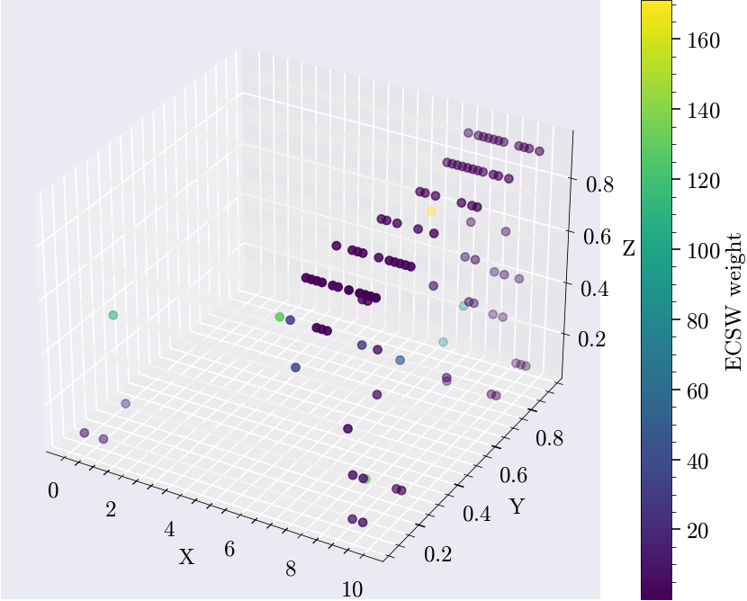
fig, ax = plot_ecsw_weights_3d(prob.mesh, x_nnls_m, projection='projected', plane='xz')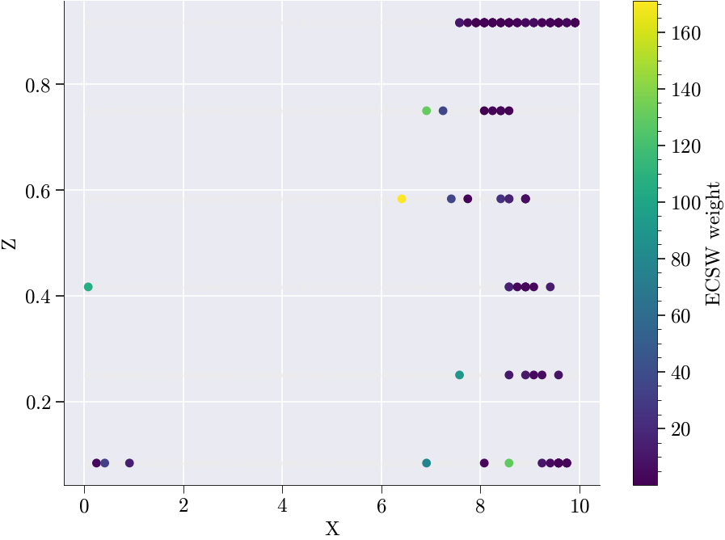
Run HyperROM simulation
# Run the hyper-reduced ROM simulation using the NNLS weights
# x_nnls_m : array of non-negative least squares coefficients,
# used here to weight the reduced basis contributions
#rom will contain the hyper_rom solution as an attribute
# rom.run_hyper_rom_simulation(np.random.rand(640));
rom.run_hyper_rom_simulation_ecsw(x_nnls_m)Snap 1/64 params=[0.60441857 1.03585147]
1 0.06185069483964993
2 6.765896686237866e-05
Snap 2/64 params=[0.90849612 1.81201197]
1 0.003703581836029681
2 5.225529967247482e-06
Snap 3/64 params=[0.80825427 1.463416 ]
1 0.002375544663331704
2 2.001546037672948e-06
Snap 4/64 params=[0.73733329 1.68920741]
1 0.005895286138995698
2 1.3202656020949157e-05
Snap 5/64 params=[0.6549118 1.33006367]
1 0.003054935508243308
2 3.1768722561982834e-06
Snap 6/64 params=[0.83398938 1.57303659]
1 0.0018299431146988133
2 1.1856398972031055e-06
Snap 7/64 params=[0.95304304 1.17164498]
1 0.00983522685006886
2 3.3155589978006536e-05
Snap 8/64 params=[0.50712202 1.92671818]
1 0.02865917323198358
2 0.0003861450563467444
Snap 9/64 params=[0.55290247 1.42934462]
1 0.010547738528803292
2 3.114615382593834e-05
Snap 10/64 params=[0.99858256 1.66851882]
1 0.010925026856615441
2 3.780741881792162e-05
Snap 11/64 params=[0.85098126 1.07187502]
1 0.006410226553373689
2 1.4735791827001234e-05
Snap 12/64 params=[0.67166085 1.83074839]
1 0.018870472723225153
2 0.00015900528879370896
Snap 13/64 params=[0.68982531 1.19035375]
1 0.011561767030075547
2 4.158985918184328e-05
Snap 14/64 params=[0.76050538 1.96274651]
1 0.010179955029286083
2 4.0736151517830994e-05
Snap 15/64 params=[0.89371539 1.30940082]
1 0.013906543153684125
2 6.036298794157689e-05
Snap 16/64 params=[0.58939501 1.53896234]
1 0.014334294955695326
2 8.622266433576826e-05
Snap 17/64 params=[0.56631351 1.27532639]
1 0.003854462476382715
2 4.84390319460048e-06
Snap 18/64 params=[0.88601609 1.50278101]
1 0.006998537379056357
2 1.642559639237291e-05
Snap 19/64 params=[0.76823427 1.22638201]
1 0.001430350976724978
2 7.575813161482804e-07
Snap 20/64 params=[0.71293825 1.99697305]
1 0.014228125144895281
2 8.291522586996504e-05
Snap 21/64 params=[0.67936017 1.1060987 ]
1 0.013652817716022569
2 5.698188058036044e-05
Snap 22/64 params=[0.87406273 1.86677188]
1 0.006644374801517281
2 1.7313584144675568e-05
Snap 23/64 params=[0.9754696 1.39316806]
1 0.009623101818462033
2 3.099826661271215e-05
Snap 24/64 params=[0.54517361 1.63444726]
1 0.01865943229046535
2 0.00015022069456282068
Snap 25/64 params=[0.5304225 1.13573854]
1 0.008836942950838948
2 2.38766845593453e-05
Snap 26/64 params=[0.96047757 1.89236886]
1 0.002084884245215064
2 1.515262447967808e-06
Snap 27/64 params=[0.82658629 1.36401578]
1 0.004288083178786335
2 6.471628700419149e-06
Snap 28/64 params=[0.63164091 1.60933928]
1 0.010906443560059062
2 4.751615154260484e-05
Snap 29/64 params=[0.72989872 1.49971392]
1 0.00552681486857429
2 9.963722832063376e-06
Snap 30/64 params=[0.78495382 1.72315666]
1 0.0016735316107253332
2 1.005944989716284e-06
Snap 31/64 params=[0.93176703 1.00150501]
1 0.01637876571219458
2 8.547273372524653e-05
Snap 32/64 params=[0.61182162 1.7761103 ]
1 0.02395052009980866
2 0.00027334005008221275([0.4720293947955079,
0.46762994492454985,
0.47052033759833345,
0.46297743674036146,
0.46705701166658226,
0.46933494372505935,
0.4791363870152472,
0.44125296365378724,
0.45844048976256896,
0.47269356484175534,
0.4787316978497037,
0.45631620479096013,
0.4718463346192136,
0.4585062851381892,
0.47581016305163076,
0.4580463536267539,
0.4635861087269373,
0.4723035962288935,
0.4738372864820079,
0.45519054047453267,
0.47335119062125547,
0.4654078789417347,
0.4763526349328548,
0.4522938754195903,
0.46532219431398436,
0.4680122461000064,
0.4730127181343591,
0.45900929920516487,
0.46668261508301156,
0.46447429543605656,
0.4810663838519246,
0.4536829271743049],
[4.432046056640776,
5.818241661775231,
5.947603053105989,
6.437612969541608,
5.981441241634379,
6.428833299366393,
5.4426435159104285,
5.39309149787866,
6.170035186872065,
6.485041798428136,
6.61184508798642,
6.7650668000604535,
6.763006725444251,
4.909307918223412,
3.81126741302194,
5.2636531099346495,
4.186300197761291,
4.495582273810647,
5.9919310596021065,
5.633613672337188,
6.519099621584107,
6.732655960124915,
6.314003680806008,
6.8048556118170085,
6.8647261343737815,
6.808227327146245,
6.96286435015403,
6.745314591855876,
6.869964871508775,
6.6593815370271185,
6.816931426392226,
6.926408400088419])# Convert the list of nonlinear hyper-ROM solutions into a NumPy array
NLS_hyper_rom = np.asarray(rom.hyper_rom_solutions)
# Retrieve the raw speed-up factors computed by the ROM
hyper_ROM_speed_up = rom.hyper_speed_up
# Drop the first element (often the full-order baseline) to analyze only relative speed-ups
hyper_ROM_speed_up = hyper_ROM_speed_up[1:]
# Fetch the relative error of the hyper-reduced ROM from the ROM object
hyper_ROM_relative_error = rom.hyper_rom_errorHyper ROM vs Full order solution performance statistics
# --- Hyper-reduced ROM error analysis ---
# Compute a flat matrix of error metrics comparing true nonlinear solutions to hyper-ROM approximations
matrix = compute_rom_error_metrics_flat(NLS_test, NLS_hyper_rom)
# Produce a text-based report summarizing these hyper-ROM error metrics
generate_rom_error_report(matrix)
# Plot diagnostic figures: error vs. speed-up for the hyper-reduced ROM
plot_rom_error_diagnostics_flat(
NLS_test, # full-order (true) solution snapshots
NLS_hyper_rom, # hyper-ROM-generated solution snapshots
hyper_ROM_relative_error, # precomputed relative error of the hyper-ROM
hyper_ROM_speed_up, # precomputed speed-up factor of the hyper-ROM
sim_axis=['True', 'Hyper ROM'],
metrics=matrix # the matrix of error metrics just computed
)
===================
ROM Accuracy Report
===================
Global Errors:
L2 Error: 3.2931e-01
Relative L2 Error: 4.6645e-03
L∞ Error: 1.7328e-03
Relative L∞ Error: 3.2516e-03
RMSE: 6.1476e-04
MAE: 4.4407e-04
Statistical Fit:
R² Score: 1.0000
Explained Variance: 0.9980
Error Distribution:
Median Error: -1.0844e-04
95th Percentile Error: 1.2648e-03
Time/Parameter-Dependent Errors:
Average Rel L2 Error over time/parameter: 4.6637e-03
Max Rel L2 Error over time/parameter: 4.8107e-03
Min Rel L2 Error over time/parameter: 4.4125e-03
――――――――――――――――――――――――――――――――――――――――――――――――――――――――――――――――――――――――――――――――――――――――――――――――――――――――――――――――――――――――――――――――――――――――――――――――――――――――――――――――――――――――――――――――――――――――――――――――――――――――――――――――――――――――――――――――――――――――――――――――――――――――――――――――――――――――――――――――――――――――――――――――――――――――――――――――――――――――――――――――――――――――――――――――――――――――――――――――――――――――――――――――――――――――――――――――――――――――――――――――――――――――――――――――――――――――――――――――――――――――――――――――――――――――――――――――――――――――――――――――――――――――――――――――――――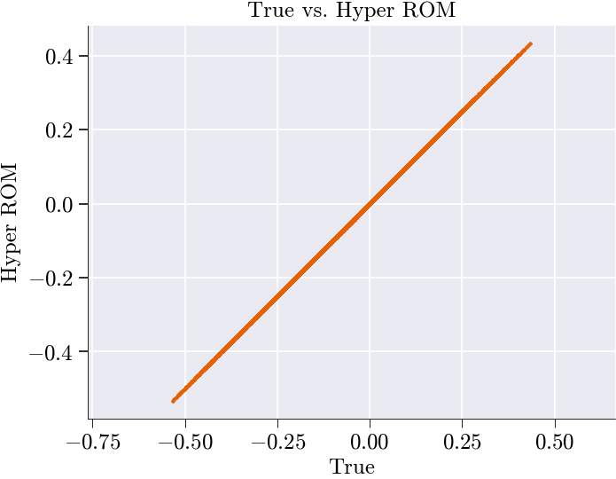
spatial_shape not given → skipping spatial snapshots.
--------------------------------------------------------------------------------------------------------------------------------------------------------------------------------------------------------------------------------------------------------------------------------------------------------------------------------------------------------------------------------------------------------------------------------------------------------------------------------------------------------------------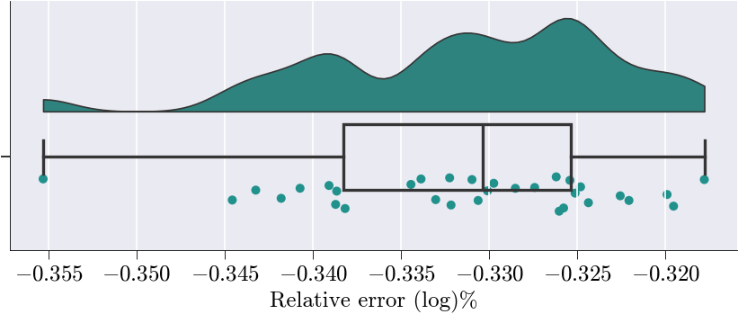
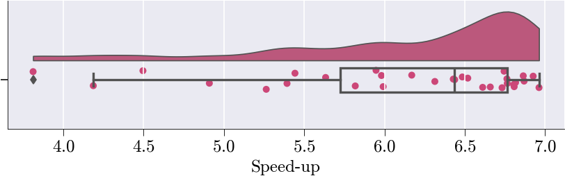